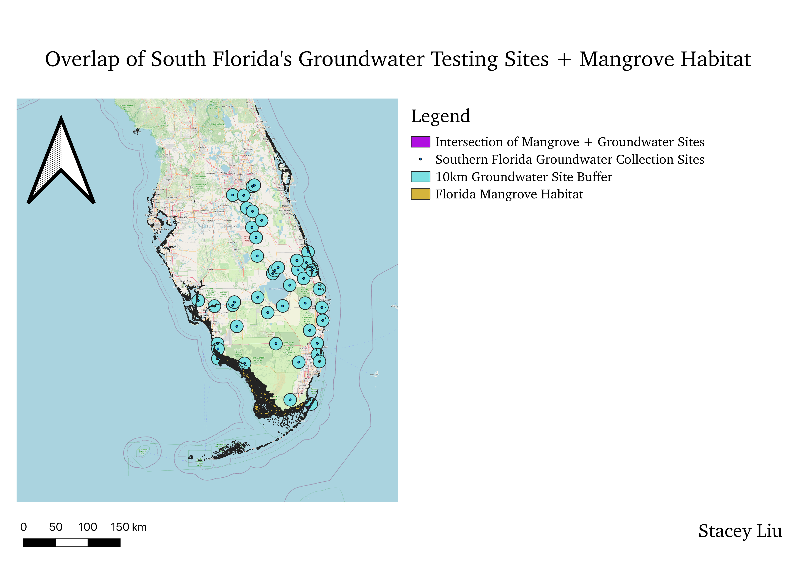

Homework 8
Stacey Liu
Topic
For this assignment, I decided to focus on the overlap between Florida's mangroves and water quality testing locations in the state's southern region. The question of interest to me in this assignment is "how many of Southern Florida's groundwater testing sites are located in mangrove habitat?" I used the "buffer" tool to place a 10 km buffer around each of Southern Florida's groundwater collecting stations to represent each individual "watershed" then used the "intersect" tool to see the overlap between the groundwater collection site buffers and the mangrove habitat. I found that of the 53 groundwater station buffer zones, 17 (or ~32% total) overlapped with mangrove habitat.
Map

Original Data
Florida Mangrove Dataset
Groundwater Collection Stations in the South Florida Water Management District
Map Data
10 km Groundwater Testing Site Buffers
Mangrove and Groundwater Collection Site Intersection